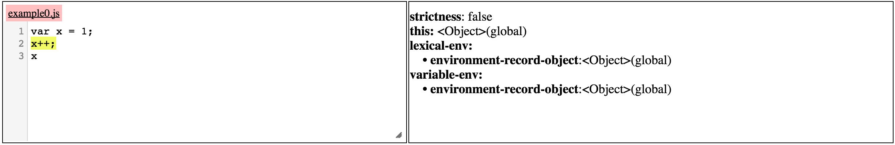
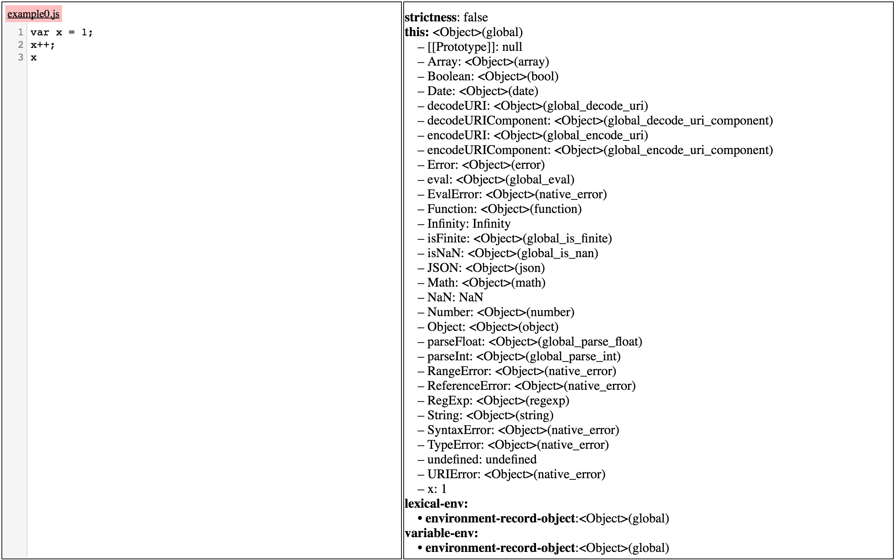

Using JSExplain
Table of Contents
0.0.1 TODO Generic explanatory text here
1 Overview
The JSExplain graphical user interface is presented in Figure 1. It allows the users to load JavaScript programs and execute them in our JavaScript interpreter. The users have at their disposal a mechanism for step-by-step execution with various levels of granularity, exposing all of the underlying details of the execution, as described in the official ECMAScript standard.

Figure 1: JSExplain User Interface
The user interface consists of six components, as shown in Figure 2. These components are:
- Program Selection, where users can choose the program that they wish to execute
- Current Program, where the program that is currently being executed is displayed
- Program Heap State, where the contents of the program heap at the current point in the execution of the program are displayed
- Navigation Panel, which allows the users to step through the program
- Interpreter, displaying the part of the interpreter code that is active at the current point in the execution of the program
- Interpreter State, where the state of the interpreter at the current point in the execution of the program is displayed

Figure 2: JSExplain User Interface Breakdown
2 Program Selection
This component allows the users to select the program that they wish to execute. This can be accomplished in two ways. First, one can click on the list of preset examples, which brings up the selection as shown in Figure 3, and there select the example one wishes to load. Alternatively, one can load a program from a file, by clicking on the "Choose file" button. After either of these procedures, the newly loaded program is displayed in the Current Program component.

Figure 3: Selecting preset examples
3 Current Program
This component serves to display the JavaScript program that we are
executing. The program is shown in its entirety, whereas the part of
the code that is currently being executed is highlighted in
yellow. For instance, in Figure 4, we can see
that the execution of the line x++ is in progress.
4 Program Heap State
This component displays the entire state of the program heap at the
current point in program execution. Illustratively, Figure
4 shows the heap state before the execution of
the command x++, highlighted in the current program component. This
heap state is collapsed, in that object properties are not shown, but
rather just the objects themselves. At this point, three objects exist
in the heap: the global object, denoted by this, as well as the
lexical and variable environments.

Figure 4: Program heap, collapsed
Objects can be expanded by clicking on the text <Object>, which is
present to the left of each object's name. This expands the object and
shows all of its properties. For instance, in Figure
5, one can see the expanded global object, with
all of its properties, such as Array and String, which are objects
themselves. Also, one can see that the global object has the property
x, whose value is 1.

Figure 5: Program heap, expanded
5 TODO Navigation Panel
- Run
- Begin/End
- Backward/Forward
- Source Prev/Source Next/Source Cursor
6 TODO Interpreter
- JsInterpreter.js
- JsInterpreter.pseudo
- JsInterpreter.ml
7 Interpreter State
The bottom part of the display is reserved for the component showing the current state of the interpreter, allowing the user an insight that is not commonly available, but which is very important in this setting. Similarly to the program heap, all of the objects and variables are shown, together with the values returned by functions. An example of such a state is shown below in Figure 6.

Figure 6: Interpreter State